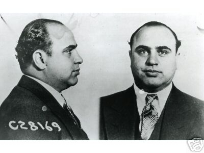
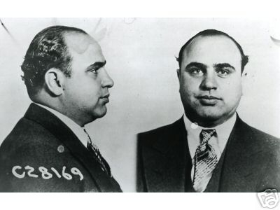

Outright, traduit en français par "carrément", est une marque de vêtements fondée en 2010 et largement inspirée par les années 30-40. Outright est le fruit du travail d’une équipe de passionnés de mode, d’arts graphiques et de musique. Originaire de Paris cette petite famille fonctionne selon une "gouvernance participative" ayant pour objectif d'impliquer chacun de ses membres en les laissant imposer le plus possible leur style et leur personnalité.
À chaque nouvelle collection, la marque peaufine également sa communication et entraîne ses nombreux fans dans un univers musical et artistique original. Elle édite aujourd’hui son propre magazine (le OutrightMAG), produit des podcasts "Outright oldschool sound " et réalise des vidéoclips pour accompagner la sortie de chacune de ses collections. Chaque thématique de collection devient ainsi une mise en scène s’adressant aux tribus, réelles ou virtuelles, qu'OUTRIGHT touche en communiquant sur les réseaux, ou en s’associant à des nombreux projets de tous horizons notamment grâce aux outils du web 2.0.
Il commence à boire régulièrement à l’âge de 17 ans.
Son père le battra, à la ceinture, de l’enfance jusqu’à l’adolescence ; jusqu’à ses 17 ans ; jusqu’au jour où, après être
rentré complètement ivre, il répondra aux coups, et mettra son père K.-O.
Plus tard, il quittera le domicile familial, logera dans des chambres d’hôtels et des appartements miteux, tout en écrivant
et en se saoulant.
Entre 21 ans et 26 ans, il voyagera. La Nouvelle-Orléans, El Paso, San Francisco, Saint-Louis, New York, Atlanta, et
Philadelphie, où il sera arrêté par le F.B.I. et incarcéré pour désertion, puis exempté et relâché. Il finira par retourner
à Los Angeles où il s’installera définitivement.
Il faut noter qu’après son retour de New York, alors qu’il a 25 ans, il n’écrira presque plus pendant environ 10 ans.
Pour vivre, il exerça divers petits boulots, dont il se fit renvoyer assez rapidement. Il fut, entre autres, magasinier,
expéditionnaire, linotypiste, gardien de nuit, et employé de bureau.
Lorsqu’il s’installe devant sa machine à écrire, c’est avec de quoi boire, et avec une radio calée sur une station diffusant
de la musique classique.
À 40 ans, le 14 octobre 1960, il publie son premier livre, un recueil de poèmes, intitulé Flower, Fist and Bestial Wail
(Fleur, Poing et Gémissement Bestial)
Il fut postier pendant 11 années au bout desquelles il démissionna, le 2 janvier 1970, à 49 ans, pour se consacrer à
l’écriture, angoissé à l’idée de ne peut-être pas pouvoir en vivre.
En octobre 1978, il se rend en France pour participer à l’émission littéraire Apostrophes de Bernard Pivot. Il boira
en direct les deux bouteilles de vin blanc qui lui avait été fournies par la chaîne, sèmera la pagaille, et devra être évacué du plateau.
Charles Bukowski fut toute sa vie un marginal. Même lorsque la notoriété arriva, il refusa d’intégrer le monde littéraire,
qu’il avait toujours trouvé ennuyeux et snob.
Il est souvent considéré comme un écrivain de la beat generation, alors qu'il n'appartint jamais à ce mouvement, ni à
aucun autre.
Son livre, Contes de la folie ordinaire, fut adapté pour le cinéma en 1981 par Marco Ferreri, avec le même titre.
Charles Bukowski n’aima pas le film, et en fit une critique très sévère, mais ô combien justifiée, dans la nouvelle
intitulée Histoire de fou, extraite de son livre Le ragoût du septuagénaire, page 397 en Livre de Poche.
L’esprit de Charles Bukowski n’est en rien retranscrit dans ce film.
En 1987, le film de Barbet Schroeder, Barfly, incomparablement meilleur, et dont il a écrit le scénario, raconte une
partie de sa vie. Il l’apprécia beaucoup plus. Il relate l’histoire de ce film dans son livre Hollywood, tout en
exprimant sa répugnance pour le monde du cinéma.
Ses écrits sont souvent autobiographiques. Il parle de son alcoolisme, de ses errances, de ses angoisses, de sa misanthropie,
des courses de chevaux, des femmes, de son désespoir, ainsi que de l’absurdité et de la folie qu’il constate au quotidien.
Son style, direct, parfois cru, n’est pas dépourvu d’humour, ni de profondeur.
Sa vision de la vie est sans concessions, sans illusions, sans naïveté, sans prétention. L’esprit affûté sera frappé par sa
grande lucidité sur ce qui l’entoure, comme sur lui-même.
|
 
